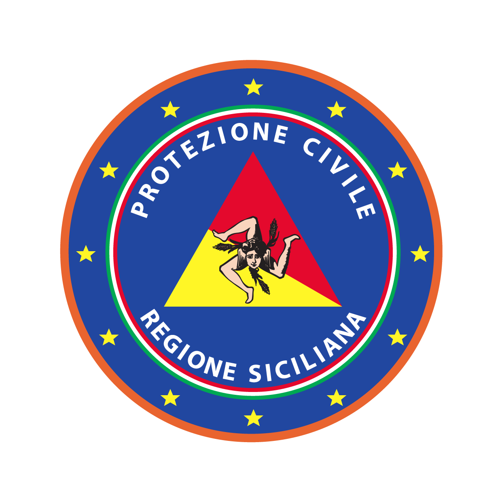

DANILO PALERMO

Me considero una persona, sobre todo, emprendedora, con gran iniciativa, responsable y con alta capacidad de trabajo.
Experiencia profesional
| EMPRESA | INCARICO | LOCALITÀ | DESDE-ASTA | |
| Wolters Kluwer España | Tecnico de software | Madrid | 02/2016 - 03/2017 | |
| Departamento Regional de la Protección Civil | Tecnico GIS | Palermo | 06/2015 - 09/2015 | |
| Departamento Regional de la Formación Profesional | Tecnico GIS | Palermo | 04/2013 - 06/2013 | |
| Departamento Regional de la Protección Civil | Tecnico GIS | Palermo | 01/2011 - 03/2011 |

Educación
| TITULO | ENTIDAD | DESDE-ASTA |
| Master GIS | ESRI España | 09/2016 - 08/2017 |
| Master en Planificación Territorial, Urbanística y Ambiental | UNIPA | 10/2013 - 10/2015 |
| Master en "Urbanisme et aménagement | Institut d’Urbanisme de Paris | 03/2014 - 04/2015 |
| Grado en Geographic Information Sistem GIS | UNIPA | 09/2008 - 04/2013 |
Habilidades y conocimientos
- Software ArcGIS optimo conocimiento de: ArcGis, ArcScene, ArcGis Pro, ArcMap, Qgis
- Creación y gestión de Data base
- Representación tridimensional de datos y modelos digitales de elevación
- Lenguage de Programacion: JAVA, C++, HTML5, CSS3 - Software: ATOM, GIT, GITHUB, CROME DEVTOOLD
- Software conocido: Adobe Illustrator – Corel Draw – Google Earth - AutoCad
- Patente Europea (ECDL)
- Óptma utilización del Pac Office (Word, Excel, Power Point, Access), Internet e Posta Elettronica
Idiomas
- Italiano (Nativo)
- Espanol (Bilingue)
- Francés (Nivel Medio)
- Inglés (Nivel Medio)
Datos Personales
Fecha de nacimiento: 13/05/1989
Lugar de nacimiento: Castellana Sicula (PA) Italy
Lugar de residencia: Madrid - Calle Angel Mugica 19 Mapa
Competencis de comunicación
Capaz de dar informacion de modo claro y preciso respondiendo a específicas preguntas.
Capacidad organizativa y de gestión, predisposición al trabajo en grupo,
fuerte actitud ante el trabajo para logar objetivos y buena capacidad comunicativa.
Potete visitare la mia pagina di Linkedin